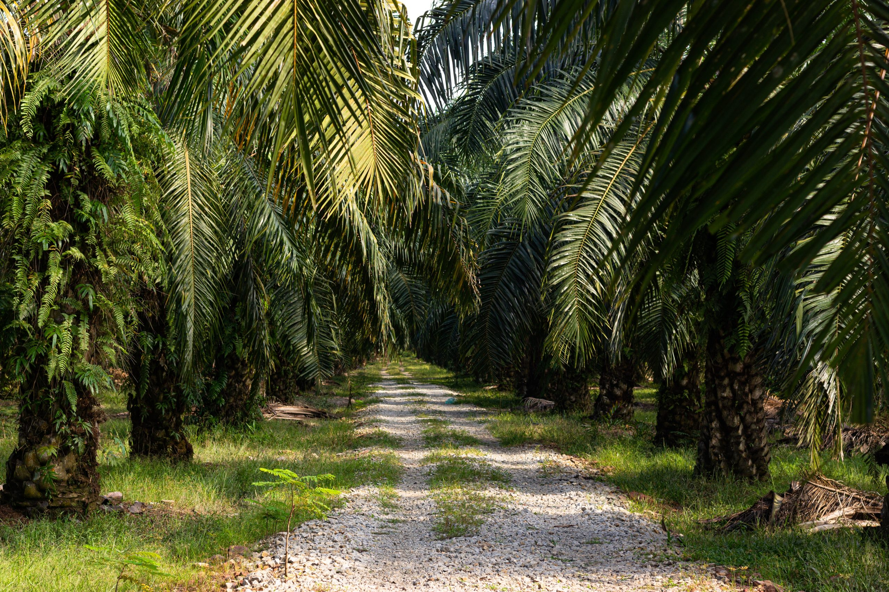
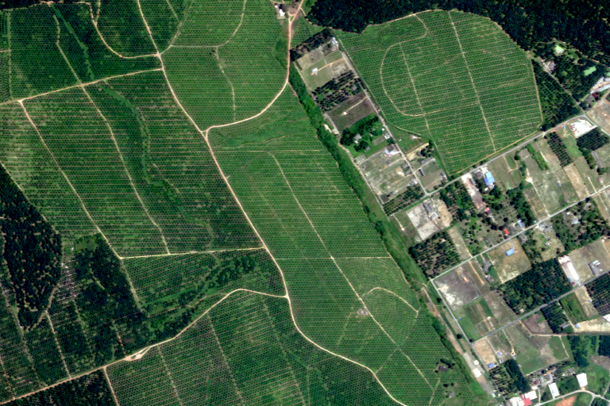
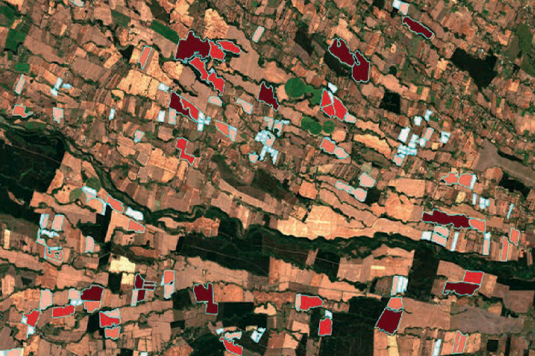
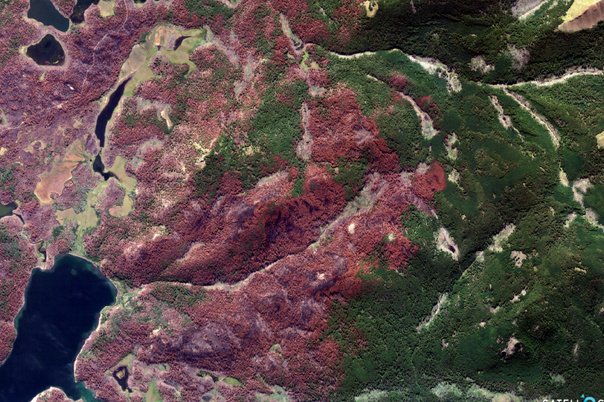
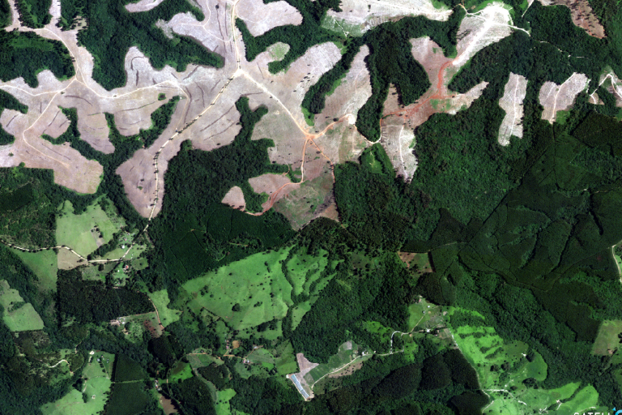
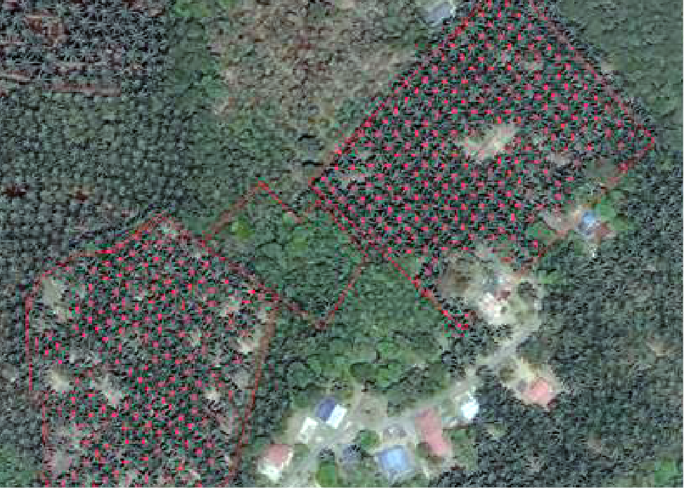
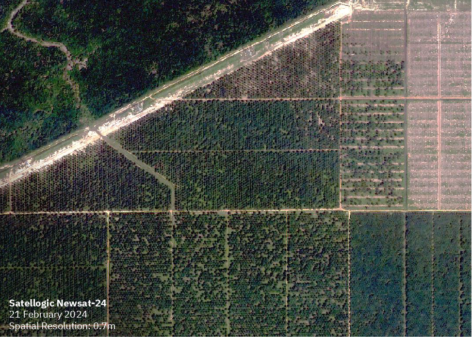
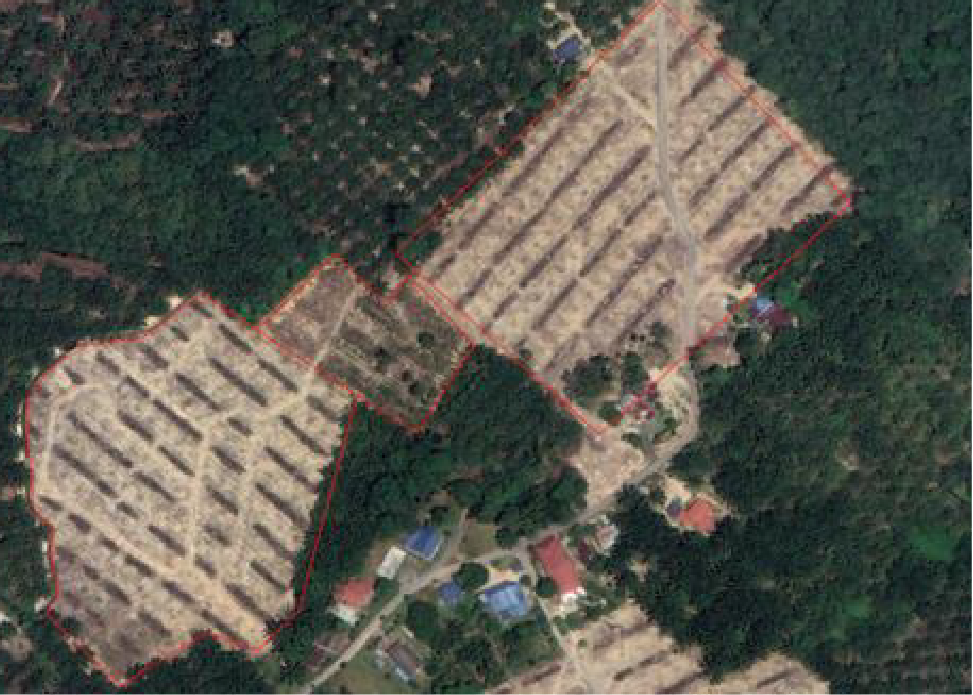
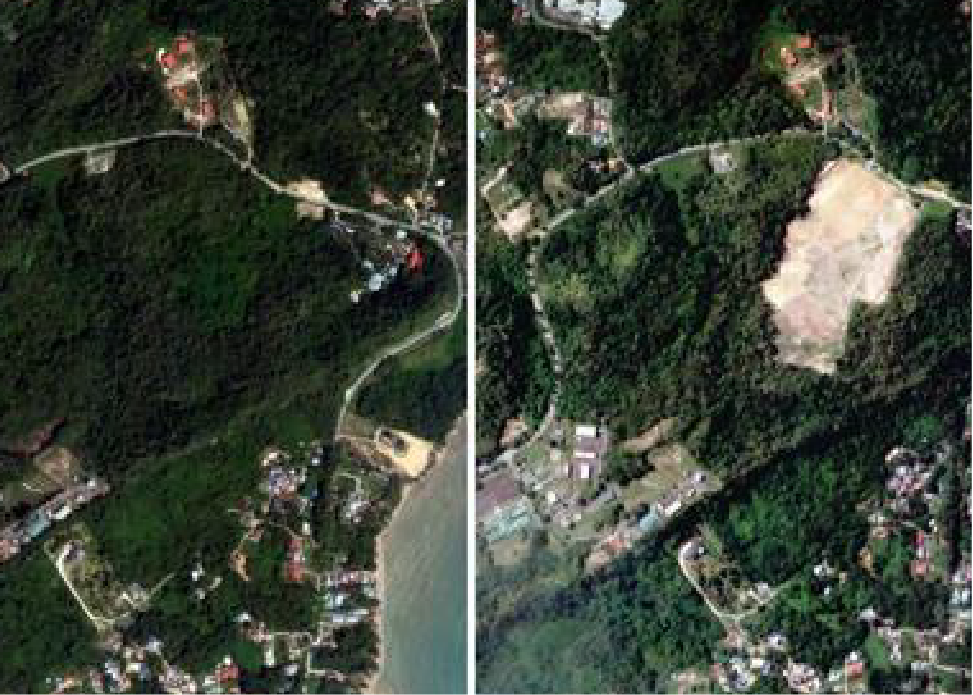

UZMASAT-1 APPLICATIONS
Plantation Management
Consult Me Your Solutions Get Your Free Trial NowMaximise your plantation’s productivity and sustainability with Geospatial AI’s innovative solutions. Our plantation management solutions leverage advanced geospatial analytics and satellite imagery to provide valuable insights into your operations.
By understanding the unique characteristics of your land, crops, and climate, we can optimise your planting, monitoring, and harvesting processes.




Integrated Crop Health Monitoring with Uzma Digital Earth
Uzma Digital Earth offers the plantation sector a powerful GIS platform that harnesses satellite-based remote sensing to provide real-time insights into crop health and field conditions. Leveraging satellite indices and specialized algorithms, the platform evaluates crop performance across expansive plantation areas, identifying anomalies such as unusual vegetation patterns or soil issues that may signal emerging threats like disease or nutrient deficiencies.

Early-Warning System for Yield Protection
With its advanced analytical capabilities, Uzma Digital Earth enables plantation managers to detect and address potential problems early. By spotting signs of crop stress, unusual growth patterns, or soil health issues, the platform provides an early-warning system that allows stakeholders to take preventive measures, mitigating yield losses and ensuring optimal crop health.
Centralized Soil Management System for Sustainable Practices
Uzma Digital Earth’s soil management feature includes a GIS-enabled database that stores comprehensive, site-specific soil data. Plantation managers can easily access detailed soil profiles, track soil health trends, optimize fertilizer use, and implement sustainable soil management practices. This centralized resource supports efficient decision-making and long-term soil health.
Estate .GAI
Advanced Land Cover Classification and Compliance
Estate.GAI, another tool within Uzma’s suite, empowers plantation managers with automated land cover classification, accurate oil palm tree counting, and regulatory compliance support. Using high-temporal and high-spatial data from UzmaSAT-1 and its satellite constellations, Estate.GAI precisely identifies land cover changes and detects deforestation, optimizing land use management and ensuring sustainable practices across plantations.

Precision Planting
- Optimal site selection
- Variable-rate seeding

Crop Health Monitoring
- Early detection of issues
- Disease and Pest Detection

Yield Optimisation
- Predictive analysis
- Harvest Planning

Sustainability Assessment
- Biodiversity Monitoring